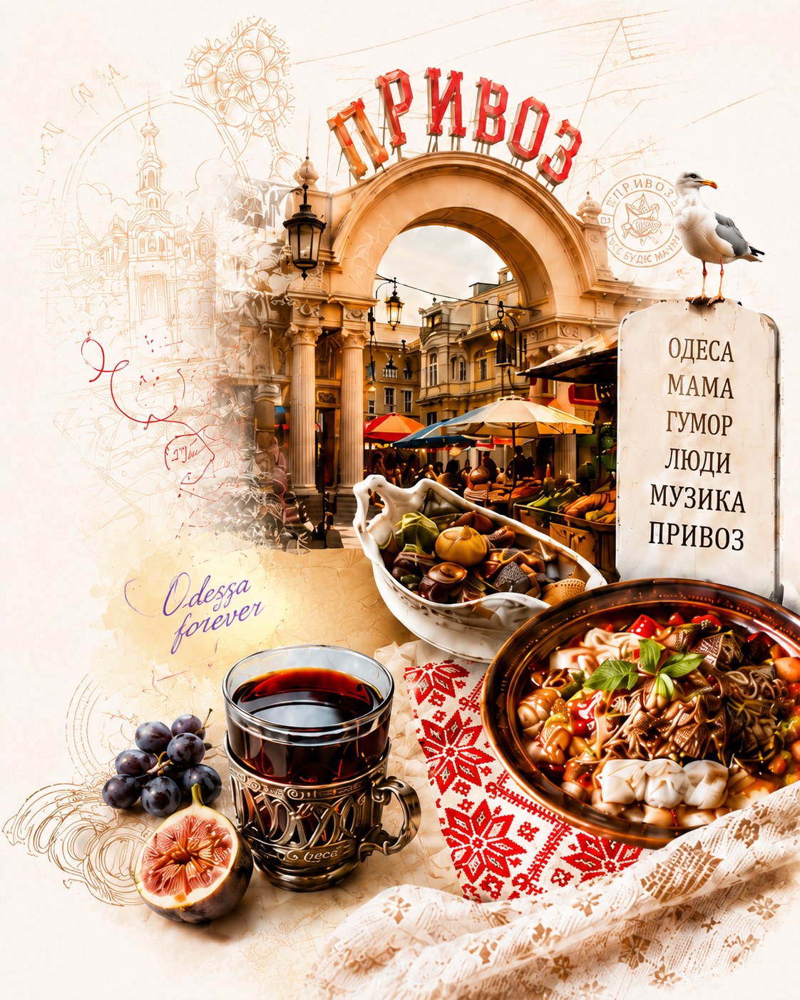

Одеса в серці: вечір української пісні у Варшаві
Теплий концерт з ароматом моря, спогадів і щирих емоцій. Дякуємо всім, хто був разом з нами!
Читати даліМузика. Гумор. Культура. Люди.
Radio Prywoz — це мікс улюбленої музики, живого спілкування, одеського гумору, культурних подій і новин для українців у Польщі та всьому світі.

Теплий концерт з ароматом моря, спогадів і щирих емоцій. Дякуємо всім, хто був разом з нами!
Читати даліДивіться найкращі ефіри, інтерв'ю та музичні програми на нашому офіційному каналі.
Читати далі
Святкуємо нашу культуру разом! Концерт, ярмарок та родинна атмосфера чекають на вас.
Читати далі


Radio Prywoz — створено україномовними для українців у Польщі та по всьому світу. Ми об'єднуємо людей через музику, гумор і живе слово. Наш ефір — це про дім, традиції та сучасне життя української громади за кордоном.
Улюблена музика, авторські програми та цікаві гості щодня.
Підтримуємо українську культуру, мову та традиції у Польщі та світі.
Висвітлюємо події, ініціативи та важливі новини для українців.
Слухайте нас у додатку, на сайті та в соцмережах — ми поруч!